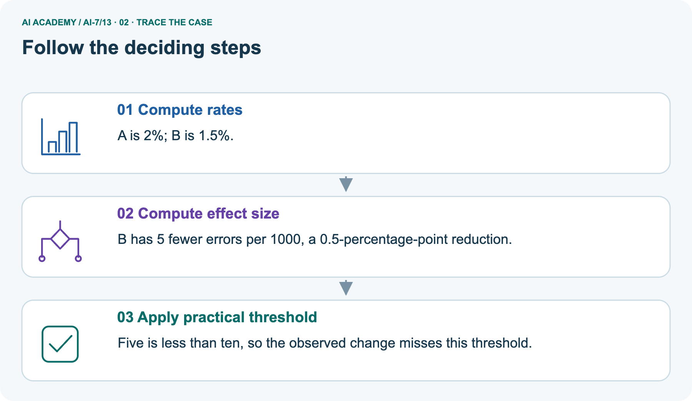
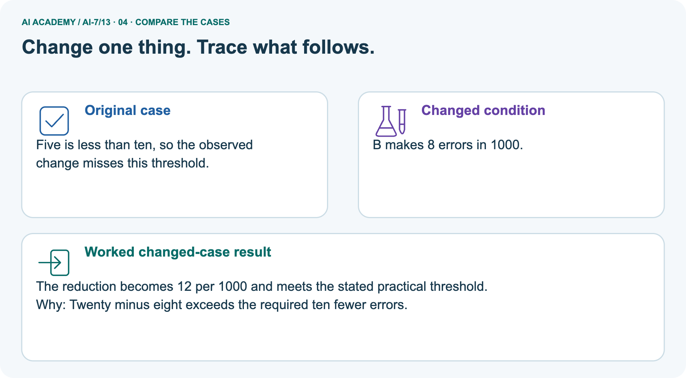
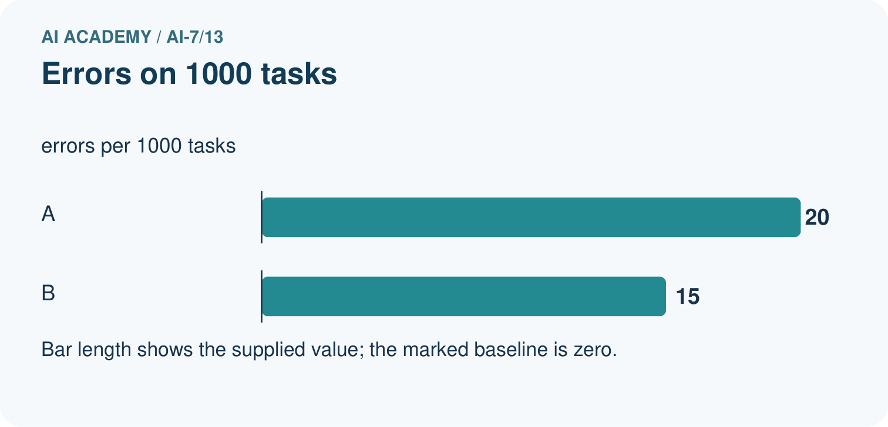
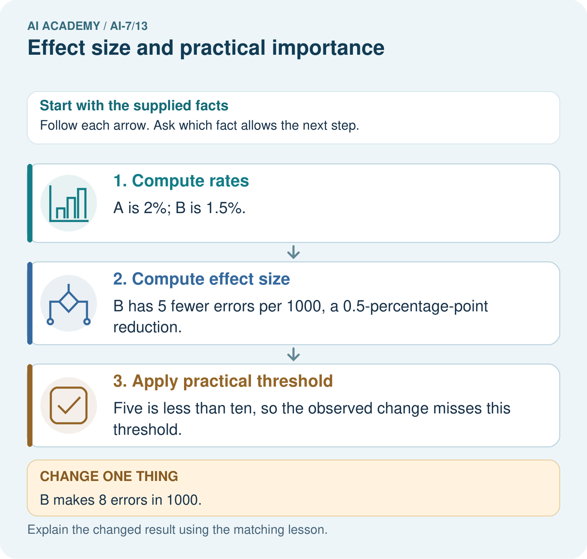
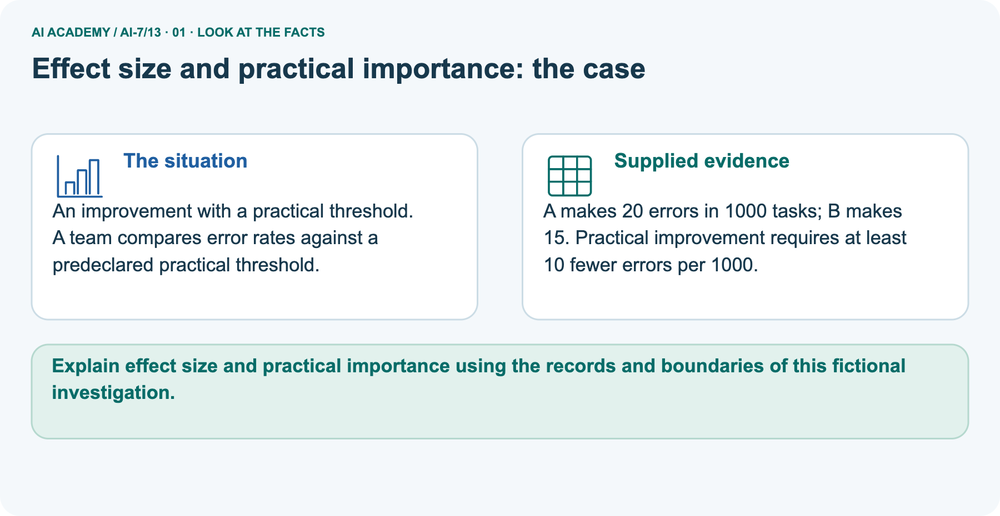
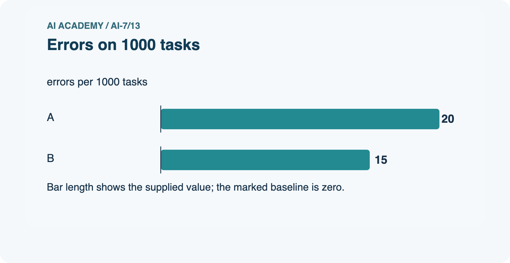
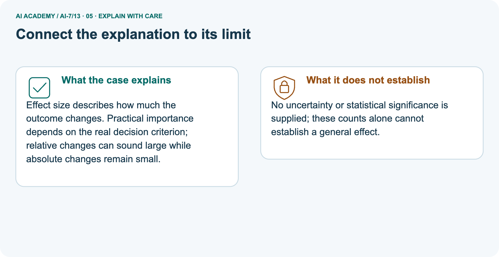
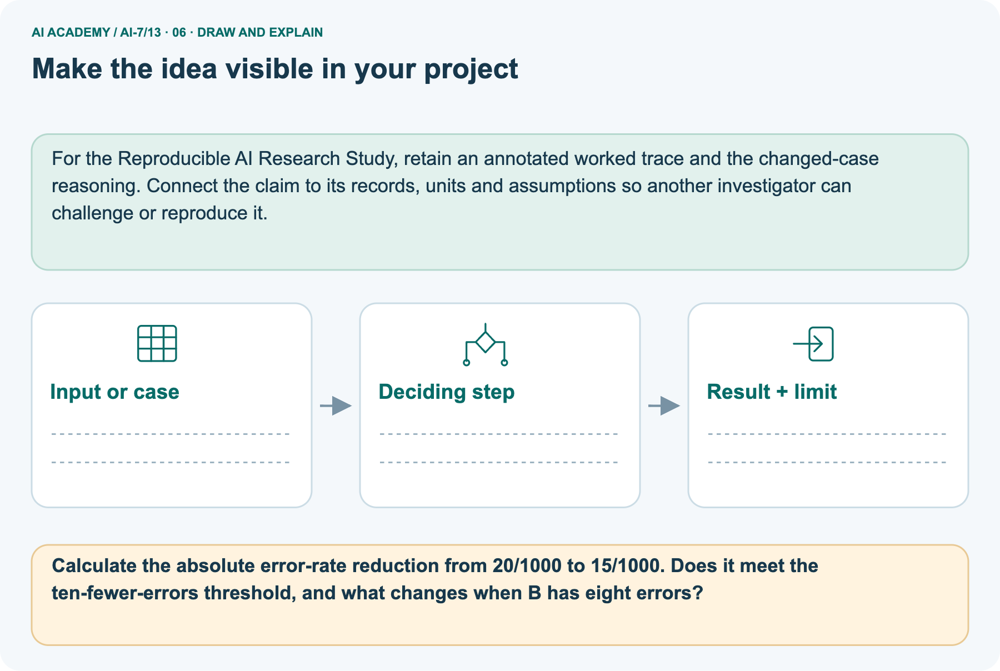

AI Academy · Level 7 · Grade 12 · Week 13 · Student lesson
Effect size and practical importance
Learn to understand, design, build, test and explain AI systems responsibly.
Project: Reproducible AI Research Study
THE CONNECTED WEEK
Define the gain. State the scale. Apply the practical rule.
Report paired-time and error-count effects without confusing relative change, mean criteria and statistical uncertainty.
Keep one habit: Effect contract → paired-gain ledger → native error-threshold picture → sign/practicality probes → complete descriptive audit → independent smaller gain.
Main lesson · Section 1
Report how much changed and whether it meets the stated practical criterion
A positive difference, practical importance and statistical evidence are different judgments.
Learning goals
I can explain the mechanism and terminology of effect size and practical importance.
I can apply the stated procedure to a new case with a traceable result.
I can identify an assumption or limitation and design a revealing follow-up.
Retrieve interval limits, comparison direction and task constraints
Close your notes first. A rough first answer helps us choose the right starting point; it is not a score for your ability.
Without opening the old lesson, explain one key idea from Uncertainty intervals. Give an example and a mistake that the idea helps you avoid.
Without opening the old lesson, explain one key idea from Confounders and controls. Give an example and a mistake that the idea helps you avoid.
Without opening the old lesson, explain one key idea from Hypotheses and measurable outcomes. Give an example and a mistake that the idea helps you avoid.
After trying, check the relevant lesson or ask your teacher. Change the part of your explanation that the evidence shows was wrong.
Prerequisite and starting response
Recall Uncertainty intervals. Explain why a recorded result needs its input conditions and evidence source before it can support a claim.
End goal
Explain effect size and practical importance using the records and boundaries of this fictional investigation.
Earlier wording, alternatives and picture transcripts
Your learning target
Remember before reading
This week you will practise:
Explain the mechanism and terminology of effect size and practical importance
Apply the stated procedure to a new case with a traceable result
Identify an assumption or limitation and design a revealing follow-up
Retrieve what you already know
This week’s end goal
Main lesson · Section 2
Define the effect scale, direction and prespecified threshold
An observed magnitude is useful to report even when it misses the criterion.
Begin with “faster by enough?”
A candidate can be faster without being faster by enough for the task. Define the effect on a clear scale, then compare it with a minimum useful change declared before inspecting results. Here gain means baseline time minus candidate time, so positive means the candidate is faster. That sign convention differs from the previous lesson’s B−A time difference.
Keep the units, pairing and threshold visible rather than relying on the word “better”.
Define effect size and practical importance
Effect size describes magnitude on a stated scale. Practical importance depends on task requirements, not merely a nonzero difference.
Complete paired-gain and separate error-rule contract
| Effect/decision item | Complete supplied-exercise rule |
|---|---|
| Main paired cases | Q1: 10→8; Q2: 12→9; Q3: 8→7 seconds, baseline→candidate |
| Gain definition | Baseline seconds − candidate seconds; positive is faster candidate |
| Summary | Mean of the three paired gains, in seconds |
| Prespecified useful-gain rule | Mean gain at least 2 seconds; equality meets the rule |
| Mean versus individual cases | Rule applies to the mean, not a requirement that every case gains 2 seconds |
| Separate error-count picture | A 20 errors/1000 tasks; B 15/1000 initially, changed B 8/1000 |
| Picture useful-change rule | At least 10 fewer errors per 1000; fictional task criterion, not a universal threshold |
| Absolute and relative effects | Keep errors-per 1000 and percentage points separate from relative reduction |
| Evidence limits | No uncertainty, significance, causal effect or complete deployment-readiness evidence supplied |
| Other task constraints | Quality, resources and robustness require their own observations; passing one criterion does not settle them |
Name supplied and missing evidence
Earlier wording, alternatives and picture transcripts
Begin by writing the question the procedure is intended to answer. Identify the information already supplied, the information it will produce and the information still missing.
These are constructed classroom examples; they do not require live accounts, private records or an external service. Do not treat a plausible explanation as a measured outcome.
Main lesson · Section 3
Trace paired gains before averaging or deciding practical value
The average meets its rule without every individual case doing so.
Original paired-gain calculation
For paired response durations compute baseline minus candidate per case and average the differences. Positive means faster candidate. Compare with a prespecified minimum useful gain.
Complete case-by-case arithmetic and mean decision
| Main paired case | Baseline seconds | Candidate seconds | Gain: baseline − candidate |
|---|---|---|---|
| Q1 | 10 | 8 | 2 |
| Q2 | 12 | 9 | 3 |
| Q3 | 8 | 7 | 1 |
| Mean gain | (2+3+1)/3 | 2 seconds | Meets inclusive mean threshold 2 |
| Individual variation | Q3 gain is1 second | Mean rule still met | Not a claim every case meets an individual 2-second target |
| Remaining uncertainty | Only three supplied paired cases | No interval or statistical test supplied | No population-certainty or causal claim |
State the threshold and missing broader evidence
Before applying the procedure, write its units, denominator or decision boundary where relevant. A partner should be able to repeat each step using the same inputs.
If a required input is absent or violates the stated contract, record that condition explicitly instead of quietly replacing it with a convenient value.
Explain the visual
Point to the input, the deciding step and the result in this week’s visual. Explain the same step in ordinary words. A picture helps when you can say what each part represents.
Earlier wording, alternatives and picture transcripts
Effect size and practical importance — evidence trace
Connect the picture and the explanation
Main lesson · Section 4
Predict a larger error-count reduction under the same practical rule
A new result may meet the threshold without adding uncertainty evidence.
Current task and response
Baseline times 10, 12, 8; candidate 8, 9, 7 seconds. Useful mean gain requires at least 2 seconds. Show the intermediate steps and give the conclusion with its scope.
Predict changed B count of eight errors
Change: B makes 8 errors in 1000.
Check after predicting
Prediction: The reduction becomes 12 per 1000 and meets the stated practical threshold.
Reason: Twenty minus eight exceeds the required ten fewer errors.
Earlier wording, alternatives and picture transcripts
Compare a familiar case with a changed case
Change one thing in the pictured case
Main lesson · Section 6
Read absolute effect, relative change and practical rule together
Keep error-count units separate from the main paired time gains.
Main paired-time criterion and checked result
Baseline times 10, 12, 8; candidate 8, 9, 7 seconds. Useful mean gain requires at least 2 seconds.
Paired gains 2, 3, 1; mean 2 meets the inclusive useful-gain threshold. It is a three-case descriptive result, not a population certainty.
Compare the intermediate evidence with the final statement. Explain why each number or decision follows from the stated inputs.
The conclusion belongs to this scenario and procedure; changing the inputs, evaluation population or authority can change what it establishes. Retain the raw record so a later revision can be compared honestly.
Separate error-count inputs and magnitude definitions
An improvement with a practical threshold. A team compares error rates against a predeclared practical threshold.
A makes 20 errors in 1000 tasks; B makes 15. Practical improvement requires at least 10 fewer errors per 1000.
The picture is a separate error-rate comparison on one thousand tasks per version. A has 20 errors, or2%; B has 15, or1.5%. The reduction is five errors per thousand, equal to0.5 percentage points and 25% relative to A’s error count. The declared practical rule requires at least ten fewer errors per thousand, so this observed reduction misses it.
Changed B with eight errors gives twelve fewer, a1.2-percentage-point reduction, meeting that rule. These descriptive counts supply no uncertainty interval or significance result. Meeting this one criterion is not automatic evidence of all quality, resource or deployment requirements.
Compare original/changed effects in the native threshold chart




Read the picture one step at a time
Effect size describes how much the outcome changes. Practical importance depends on the real decision criterion; relative changes can sound large while absolute changes remain small.
Complete counts, rates and practical decisions
| Separate error comparison | Original B | Changed B |
|---|---|---|
| A baseline error count | 20/1000 =2% | Same20/1000 =2% |
| B error count/rate | 15/1000 =1.5% | 8/1000 =0.8% |
| Fewer errors per 1000 | 20−15 =5 | 20−8 =12 |
| Absolute rate reduction | 0.5 percentage points | 1.2 percentage points |
| Relative error reduction | 5/20 =25% | 12/20 =60% |
| At least 10 fewer required | Misses:5 <10 | Meets:12 ≥10 |
| Statistical uncertainty | Not supplied | Still not supplied |
Predict B with eight errors
Change one thing: B makes 8 errors in 1000. Predict the result before checking the explanation. What remains the same?
Check after predicting



Explain missing uncertainty and absolute-effect interpretation
No uncertainty or statistical significance is supplied; these counts alone cannot establish a general effect.
Read the labelled picture: Calculate the absolute error-rate reduction from 20/1000 to 15/1000. Does it meet the ten-fewer-errors threshold, and what changes when B has eight errors?
Earlier wording, alternatives and picture transcripts
Optional local lab: predict the printed result before running this standalone Python 3 example. Change one relevant boundary input, record the outcome and state the contract or statistical assumptions.
The program uses fictional values and the Python standard library; it performs no external operations.
def paired_gain(baseline, candidate):
if not baseline or len(baseline) != len(candidate):
raise ValueError('paired lengths')
differences = [a - b for (a, b) in zip(baseline, candidate)]
return (differences, sum(differences) / len(differences))
print(paired_gain([10, 12, 8], [8, 9, 7]))Learn from the worked case
Cover the result before checking it. Say what is given, choose the procedure, and follow one step at a time. Then uncover the result and explain your first mismatch. Ask why a step is allowed, not only what number it produces.
A pictorial worked case: Effect size and practical importance
The facts we will use






Why this result follows
What this example does not establish
Main lesson · Section 7
Audit sign conventions and the reach of a practical decision
Magnitude, decision criteria and statistical uncertainty need distinct evidence.
Core effect-size qualification and failure analysis
A meaningful sample effect may remain statistically uncertain; statistical significance can also concern a practically tiny effect.
A useful check asks what would make the reasoning fail. Distinguish a failure to execute the declared procedure from a weakness in the procedure itself.
The first may require a correction; the second requires an explicitly revised method and new evidence. Preserve unsuccessful cases so an improved result cannot hide the original problem.
Complete mean/individual and absolute/relative probes
| Effect/practicality probe | Expected interpretation |
|---|---|
| Positive baseline-minus-candidate gain | Candidate is faster under this sign convention |
| Mean equals the minimum useful gain | Meets an at-least threshold |
| One case below mean target | Does not automatically fail a rule about the mean |
| Relative reduction sounds large | Report absolute units and baseline rate too |
| Observed reduction below practical target | Still a descriptive change, but criterion not met |
| Observed criterion met | No automatic significance, causal or deployment conclusion |
| Threshold chosen after inspecting outcomes | Disclose revision rather than claim prespecified importance |
| Faster response is wrong or over resource budget | Other requirements can still block practical usefulness |
| Three supplied pairs | Do not invent a population effect interval or certainty |
Guided repair and explanation
A report omits this qualification: A meaningful sample effect may remain statistically uncertain; statistical significance can also concern a practically tiny effect.
Explain how omitting it could change a reader's interpretation, and write an accurate replacement.
Earlier wording, alternatives and picture transcripts
Locate the earliest unsupported step
Main lesson · Section 8
Practise naming the effect and comparing it with the right rule
Write both the observed magnitude and the criterion outcome.
Current explanation and guided check
Explain the weekly mechanism in your own words. Use the worked scenario to name its input, decision rule and output.
Supported W2 trace
Use workbook W2 for the connected example “Effect size and practical importance”. First fill the input and rule boxes. Try the middle steps before asking for a hint. After a hint, try the next step yourself.
| Plan | Do | Check |
|---|---|---|
| What is given? Which rule or procedure applies? | Record each intermediate step. | Does the result follow? What remains unknown? |
Explain your trace to a partner. Your partner points to one step to check. Swap roles on the next case. Each person writes their own explanation.
Individual scope check
Use the worked case for Effect size and practical importance. Proposed explanation: “The worked result establishes every future case”. Decide whether this explanation is supported.
Point to the step or supplied fact that decides; explain your repair if needed.
Answer on your own before discussion. If you are unsure, say which step you need help with.
Picture response
Calculate the absolute error-rate reduction from 20/1000 to 15/1000. Does it meet the ten-fewer-errors threshold, and what changes when B has eight errors?
Reserve the selected new paired times and threshold
This is supported practice. Keep the separately named independent case for an attempt before feedback.
Earlier wording, alternatives and picture transcripts
Practise with less help: Trace the worked case
Check your reasoning
Explain the picture
Main lesson · Section 9
Run the complete descriptive-effect and practical-criterion investigation
Inspect the paired records, units and exact decision rule before interpreting the flags.
Current paired-time gain investigation
Baseline times 10, 12, 8; candidate 8, 9, 7 seconds. Useful mean gain requires at least 2 seconds. Show the intermediate steps and give the conclusion with its scope.
Runnable complete time and count analysis
"""Supplied paired gains and practical thresholds, without inference or live timing."""
from math import isfinite
from statistics import mean
from fractions import Fraction
def finite_nonnegative(value):
return type(value) in (int,float) and isfinite(value) and value>=0
def paired_gain(rows,minimum_useful_gain):
if type(rows) is not list or not rows or not finite_nonnegative(minimum_useful_gain) or minimum_useful_gain<=0:
raise ValueError('paired records and positive declared threshold required')
ids=[];gains=[]
for row in rows:
if type(row) is not dict or set(row)!={'case_id','baseline_seconds','candidate_seconds'}:
raise ValueError('exact paired case/timing fields required')
if type(row['case_id']) is not str or not row['case_id'] or row['case_id'] in ids:raise ValueError('unique paired case IDs required')
if not all(finite_nonnegative(row[k]) for k in ['baseline_seconds','candidate_seconds']):raise ValueError('finite nonnegative supplied times required')
ids.append(row['case_id']);gains.append(row['baseline_seconds']-row['candidate_seconds'])
average=mean(gains)
return {'case_ids':ids,'gains_seconds':gains,'mean_gain_seconds':average,
'minimum_useful_mean_gain':minimum_useful_gain,'meets_declared_mean_threshold':average>=minimum_useful_gain}
def error_reduction(a_errors,b_errors,total,minimum_per_thousand=10):
if any(type(v) is not int for v in [a_errors,b_errors,total,minimum_per_thousand]) or total<=0 or minimum_per_thousand<=0:
raise ValueError('exact integer counts and positive denominator/threshold required')
if not 0<=a_errors<=total or not 0<=b_errors<=total:raise ValueError('valid error counts required')
difference=Fraction(a_errors-b_errors,total)
return {'A_error_rate':Fraction(a_errors,total),'B_error_rate':Fraction(b_errors,total),
'reduction_percentage_points':100*difference,'fewer_errors_per_thousand':1000*difference,
'relative_error_reduction':Fraction(a_errors-b_errors,a_errors) if a_errors else None,
'meets_declared_threshold':1000*difference>=minimum_per_thousand}
rows=[{'case_id':'Q'+str(i+1),'baseline_seconds':a,'candidate_seconds':b}
for i,(a,b) in enumerate(zip([10,12,8],[8,9,7]))]
main=paired_gain(rows,2)
assert main['gains_seconds']==[2,3,1] and main['mean_gain_seconds']==2 and main['meets_declared_mean_threshold']
picture=error_reduction(20,15,1000)
changed=error_reduction(20,8,1000)
assert picture['fewer_errors_per_thousand']==5 and picture['reduction_percentage_points']==Fraction(1,2) and not picture['meets_declared_threshold']
assert picture['relative_error_reduction']==Fraction(1,4)
assert changed['fewer_errors_per_thousand']==12 and changed['reduction_percentage_points']==Fraction(6,5) and changed['meets_declared_threshold']
assert error_reduction(20,10,1000)['meets_declared_threshold']
print('Main paired baseline-minus-candidate gains:',main)
print('Separate original supplied error-count comparison:',picture)
print('Changed supplied B error count:',changed)
print('Main mean threshold is inclusive and applies to the mean, not every case. The prior lesson used B-A; this gain definition deliberately uses A-B.')
print('These are descriptive supplied observations and fictional practical criteria, not actual timings, significance, uncertainty intervals, causal effects or complete deployment decisions. Quality/resources require their own evidence.')
Expected magnitudes and evidence limits
Predict the three gains, their mean and equality with the two-second mean threshold. The complete code keeps paired IDs, finite nonnegative supplied times and a declared positive threshold. In the separate count comparison it computes exact absolute/relative reductions, checks the ten-per-thousand criterion and includes the equality boundary. None of the arithmetic times a real response or estimates uncertainty.
A passing mean criterion does not mean every case gains two seconds, and a relative reduction is not the percentage-point change. Keep the independent three-case times and 1.5-second threshold for the first individual attempt.
Evidence ledger and reflection
| Record | Your evidence |
|---|---|
| Given input and fixed rule | |
| Prediction before checking | |
| Actual result, or “not run” | |
| First mismatch and one explanation | |
| Boundary or missing input and expected response |
On paper, trace the supplied procedure. If code is provided, predict before running it in a local practice file. Never write an expected answer as though it were an observed run.
Before trying: what do I expect, and why? While trying: which step could first go wrong? Afterwards: what did I actually observe, and what should change? Keep “not run” if you only traced the procedure.
Earlier wording, alternatives and picture transcripts
Predict, investigate and preserve the evidence
def paired_gain(baseline, candidate):
if not baseline or len(baseline) != len(candidate):
raise ValueError('paired lengths')
differences = [a - b for (a, b) in zip(baseline, candidate)]
return (differences, sum(differences) / len(differences))
print(paired_gain([10, 12, 8], [8, 9, 7]))Plan → try → check
Main lesson · Section 14
Try alone: a positive gain that may be too small
Calculate the paired mean and apply the new declared threshold.
Complete selected independent task
Baseline times are 6, 8, 10 seconds; candidate times are 5, 7, 9 seconds on the same three cases in the same order. Define each gain as baseline minus candidate. Useful mean gain must be at least 1.5 seconds. Calculate and decide.
First attempt and support record
Attempt this case before feedback. Record any help. Earlier examples below are further practice; a case already practised with feedback cannot establish fresh transfer.
Feedback after trying
Attempt the independent case before hints. Record whether you worked alone, used a hint or followed a model. After feedback, fix the first unsupported step and explain why it changed.
A later check uses a changed case, not a copied answer.
Earlier wording, alternatives and picture transcripts
Independent case: Apply a new case independently
Attempt this without hints
Baseline times are 6, 8, 10 seconds; candidate times are 5, 7, 9 seconds on the same three cases in the same order. Define each gain as baseline minus candidate. Useful mean gain must be at least 1.5 seconds. Calculate and decide.
Record support used: none, hint or teacher explanation. After feedback, a different case is needed to demonstrate independence.
Use feedback to improve
Main lesson · Section 11
Save the effect definition, threshold and remaining task constraints
Preserve improvements and failures without turning either into unsupported general conclusions.
Project task and artifact
Add a labelled effect size and practical importance evidence sheet to Reproducible AI Research Study. Show how you can explain the mechanism and terminology of effect size and practical importance.
Use the supplied fictional case and keep its inputs, intermediate steps, calculation or prediction, and limitation. Connect this record to last week’s record; a matching answer without a trace is insufficient.
| Project evidence | Record |
|---|---|
| Component and version | |
| Inputs permitted at prediction time | |
| Trace and comparison with earlier work | |
| Failure, limit and human review |
Actual local calculation or paper trace and limitations
For the Reproducible AI Research Study, retain an annotated worked trace and the changed-case reasoning. Connect the claim to its records, units and assumptions so another investigator can challenge or reproduce it.
Earlier wording, alternatives and picture transcripts
Evidence for your project
Main lesson · Section 16
Explain the magnitude, practical decision and unknown uncertainty separately
A useful report keeps all three visible.
Retrieve and explain
Close your notes. Explain this goal in your own words: Explain the mechanism and terminology of effect size and practical importance
Plan a changed-case return
If you are unsure, return to the worked picture and explain one arrow. If you are ready, change an input or assumption and justify your prediction.
Save your workbook evidence. At the next review, try a different case before opening your old answer.
Reference bank and extra practice
Choose the reference that helps your next step.
Reference · Use research vocabulary precisely
Reference · Section 5
Reference · Use research vocabulary precisely
Connect each term to the question, comparison, measurement or evidence.
Vocabulary and your explanation
| Word | Meaning |
|---|---|
| Effect size | The magnitude of a difference under a declared scale |
| Paired difference | A within-unit comparison |
| Practical threshold | A prespecified magnitude considered useful |
Extra challenge · Explain a stronger case
Reference · Section 10
Extra challenge · Explain a stronger case
Choose the next challenge after the main route.
Explain,repair and extend
Explain the weekly mechanism in your own words. Use the worked scenario to name its input, decision rule and output.
A report omits this qualification: A meaningful sample effect may remain statistically uncertain; statistical significance can also concern a practically tiny effect.
Explain how omitting it could change a reader's interpretation, and write an accurate replacement.
For the worked scenario, propose one additional case that could reveal a failure, describe its expected outcome before running it, and explain what would need to remain fixed for a fair comparison.
Do not reuse W4 as a new final test after receiving feedback.
Explain → apply → challenge
Reference · Check the research reasoning and its limits
Reference · Section 12
Reference · Check the research reasoning and its limits
Use after practice; reserve the selected independent case for its first attempt.
Current explanation and response
Complete the supported workbook tasks before attempting W4 independently. Record any hints or help used. After feedback, use the teacher's fresh retry rather than copying the earlier answer.
For a project, select a relevant new case, predict the outcome from the declared rule and preserve the result alongside any revision.
For the worked scenario, propose one additional case that could reveal a failure, describe its expected outcome before running it, and explain what would need to remain fixed for a fair comparison.
Do not reuse W4 as a new final test after receiving feedback.
Extra practice · Revisit the complete trace
Reference · Section 13
Extra practice · Revisit the complete trace
Predict before reading the supplied steps.
Complete trace and evidence
Complete evidence record
Effect size and practical importance — evidence trace
Follow the input through the stated procedure to its result. Cover the result first, predict it, then explain every intermediate step. The text/table accompanies the figure so the example can be read without colour.
Reference · The earlier route checklist
Reference · Section 15
Reference · The earlier route checklist
Use one main route rather than repeating the lesson.
Targets,route and first prediction
Start with this question: An improvement with a practical threshold. A team compares error rates against a predeclared practical threshold.
| By the end, I can | How I will show it |
|---|---|
| Explain the mechanism and terminology of effect size and practical importance | Explain the deciding step, show a trace or test, and state one limit. |
| Apply the stated procedure to a new case with a traceable result | Explain the deciding step, show a trace or test, and state one limit. |
| Identify an assumption or limitation and design a revealing follow-up | Explain the deciding step, show a trace or test, and state one limit. |
Remember → watch and explain → try with help → investigate → try independently → keep project evidence. Your teacher may spread this lesson across several classes.
Keep your first prediction. Compare it with what the evidence shows and explain any change.
Extra practice · Predict,check and repair
Reference · Section 17
Extra practice · Predict,check and repair
Keep supported feedback separate from the independent case.
First supported question and optional hint
An improvement with a practical threshold. A team compares error rates against a predeclared practical threshold.
Which labelled step matches this detail? Five is less than ten, so the observed change misses this threshold.
1. Apply practical threshold
2. Compute rates
3. Compute effect size
Hint if needed: Read the steps in the pictorial case. Match the supplied detail to the stage that performs or records it.
Practice 1: explain the deciding evidence
Check after the first attempt
After your attempt, compare with the supported explanation: Apply practical threshold Five is less than ten, so the observed change misses this threshold. Effect size describes how much the outcome changes.
Practical importance depends on the real decision criterion; relative changes can sound large while absolute changes remain small.
Changed-case question and optional hint
Changed-case practice: B makes 8 errors in 1000. Which conclusion is supported by the supplied facts?
1. The reduction becomes 12 per 1000 and meets the stated practical threshold.
2. This one example guarantees correct results for every future input.
3. We can decide the result without examining the changed input or the procedure.
Hint if needed: Use the changed condition and the deciding step in the pictorial trace. The answer must say what follows from those facts.
Practice 2: explain the deciding evidence
Check after the changed attempt
After your attempt, compare with the supported explanation: The reduction becomes 12 per 1000 and meets the stated practical threshold. Twenty minus eight exceeds the required ten fewer errors.
Repair and retain the record
Review Uncertainty intervals (ai-7/12). Goal: Explain the mechanism and terminology of uncertainty intervals. Short practice: Locate -0.8 and zero relative to the supplied interval [-1.4,-0.2].
Interpret the sign and confidence-method meaning, then describe what changes with interval [-1.4,0.3].. Return to this week and explain what you changed.
Review Confounders and controls (ai-7/10). Goal: Explain the mechanism and terminology of confounders and controls. Short practice: Draw the four condition/background combinations.
Which variables were coupled before, and why would collecting only healthy-white and spotted-blue again leave the confounding unresolved?. Return to this week and explain what you changed.
Review Hypotheses and measurable outcomes (ai-7/7). Goal: Explain the mechanism and terminology of hypotheses and measurable outcomes. Short practice: Name the predicted outcome and how unsupported is scored.
If B sounds friendlier but ties A’s unsupported count, does the recorded improvement hypothesis receive support?. Return to this week and explain what you changed.
The browser lab lets you edit the supported Python examples already included in this lesson. Predict first, run, inspect the actual output or error, change one input, then run again.
Keep code, predictions, actual results and a reasoned revision together. On paper, label your result as a trace rather than an execution.
Use Download completed work in the hosted lesson to export your answers, reflections, practice feedback and code-run evidence. Open the HTML copy to read or print it.
Drafts stay in this browser when storage is available; clear drafts on a shared device.
Earlier wording, alternatives and picture transcripts
Use this supported practice once, in the browser or on paper. Keep the reserved independent assessment for a separate first attempt before teacher feedback.
Repair a missing building block
Predict, run and debug
Keep your completed work
Reference · Six-picture concept journey
Reference · Section 18
Reference · Six-picture concept journey
Choose the picture that supports the current explanation.
01. Effect size and practical importance: the case



An improvement with a practical threshold. A team compares error rates against a predeclared practical threshold. Supplied facts: A makes 20 errors in 1000 tasks; B makes 15.
Practical improvement requires at least 10 fewer errors per 1000.
Point to the given fact that matters most. Explain why it matters.
02. Follow the deciding steps
Compute rates: A is 2%; B is 1.5%. → Compute effect size: B has 5 fewer errors per 1000, a 0.5-percentage-point reduction. → Apply practical threshold: Five is less than ten, so the observed change misses this threshold.
Point to each numbered stage and explain which recorded input it uses.
03. Errors on 1000 tasks



Errors on 1000 tasks. Units: errors per 1000 tasks. A: 20. B: 15.
Read the labels and values. Explain the relationship the model shows.
04. Change one thing. Trace what follows.
Original case: Five is less than ten, so the observed change misses this threshold. Changed condition: B makes 8 errors in 1000. Expected result: The reduction becomes 12 per 1000 and meets the stated practical threshold.
Reason: Twenty minus eight exceeds the required ten fewer errors.
Predict before checking the worked changed-case result. Name what changed and what the supplied facts allow you to conclude.
05. Connect the explanation to its limit



Effect size describes how much the outcome changes. Practical importance depends on the real decision criterion; relative changes can sound large while absolute changes remain small.
Limit: No uncertainty or statistical significance is supplied; these counts alone cannot establish a general effect.
Explain the case, then point to a limit on the claim.
06. Make the idea visible in your project



For the Reproducible AI Research Study, retain an annotated worked trace and the changed-case reasoning. Connect the claim to its records, units and assumptions so another investigator can challenge or reproduce it.
Draw your input, deciding step, result and limit. Supported question: Calculate the absolute error-rate reduction from 20/1000 to 15/1000. Does it meet the ten-fewer-errors threshold, and what changes when B has eight errors?
Draw your project trace and justify the deciding step using evidence.